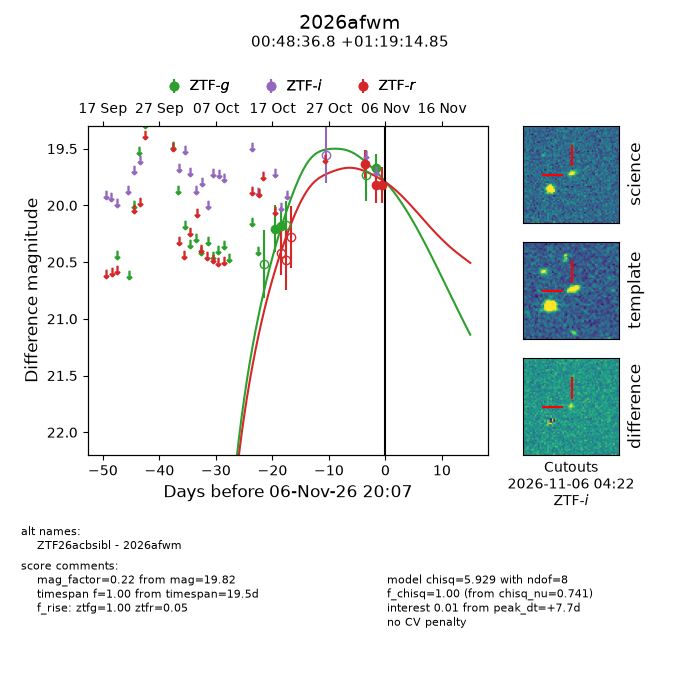
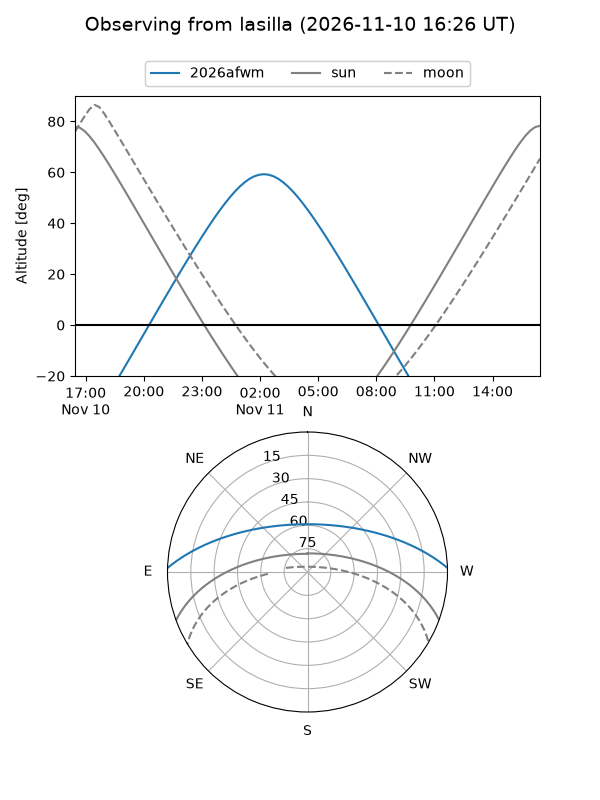
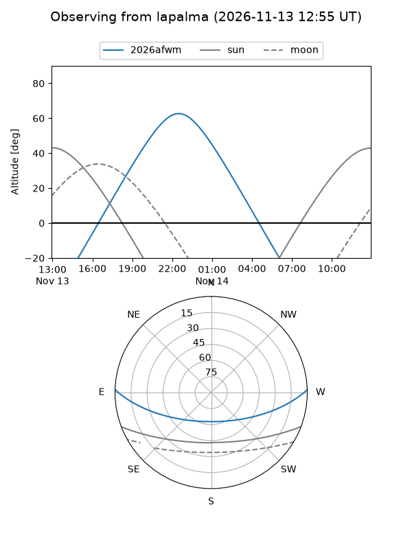
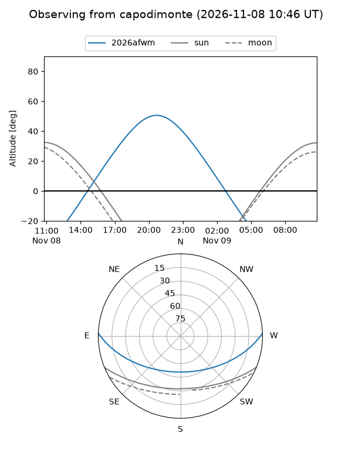
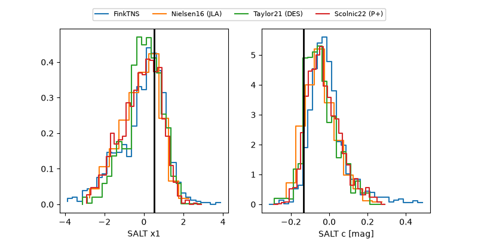

2026afwm
Target 2026afwm at 2026-11-06 20:10
Aliases and brokers:
FINK-ZTF: ztf.fink-portal.org/ZTF26acbsibl
Lasair-ZTF: lasair-ztf.lsst.ac.uk/objects/ZTF26acbsibl
ALeRCE-ZTF: alerce.online/object/ZTF26acbsibl
YSE-PZ: ziggy.ucolick.org/yse/transient_detail/2026afwm
TNS name: wis-tns.org/object/2026afwm
Direct TNS query: direct search
alt names
ZTF26acbsibl (ztf,fink_ztf)
2026afwm (tns,yse)
Coordinates:
equatorial (ra, dec) = 12.1534,+1.32079
equatorial (HMS+DMS) = 00:48:36.82,+01:19:14.85
galactic (l, b) = (121.4505,-61.54283)
Flags:
peak dt: +7.7
Photometry:
last ztfg=19.67, ztfr=19.82
3 ztfg, 3 ztfr detections
Lightcurve

Visibility



Additional plots
